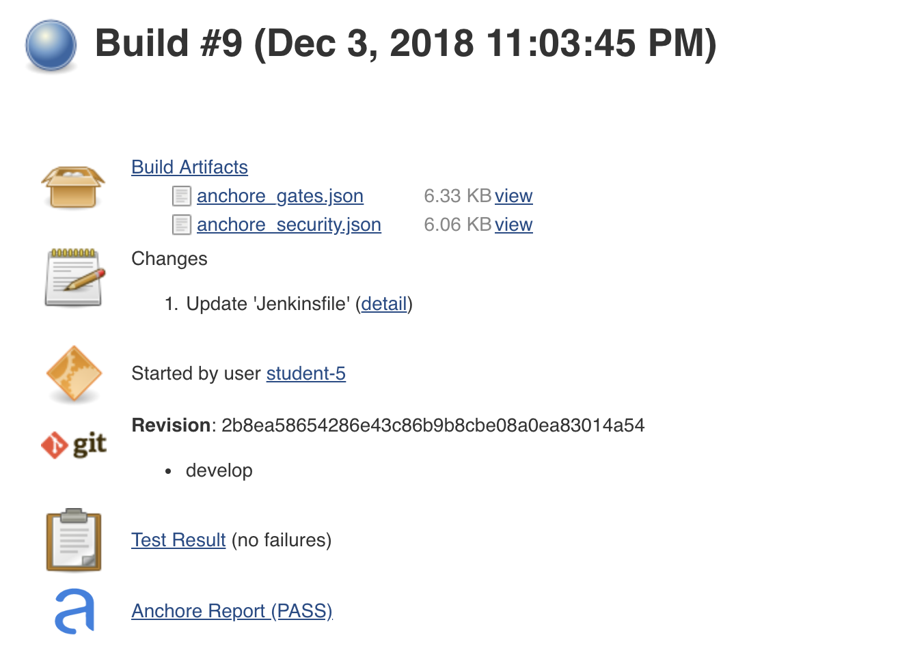

In the next step, we will scan the newly created image for issues and known vulnerabilities. We will be using the Jenkins Anchore Image Scanner for this task.
Add the following lines to the Jenkinsfile.
if (BRANCH_NAME ==~ /(develop|release.*)/) {
stage('Container Scan') {
writeFile file: 'anchore_images', text: "${imageBase}/${imageNamespace}/${app_name}:${tag} Dockerfile"
anchore engineRetries: '800', name: 'anchore_images'
}
}
Once complete, you will see the Anchore Report Link associated with the build.
